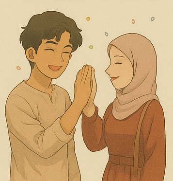
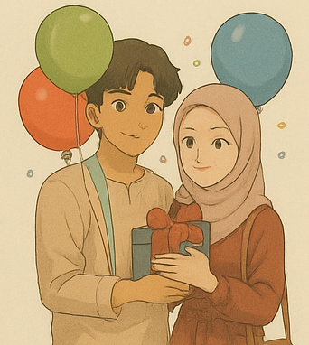

All The Best On Ur Special Day
Allaww kamuu,, maaf ya mungkin aku gajadi orng pertama yang ngucapin, ga kya apa yg kamu lakuin ke aku wktu kemarin,, apalagi uda se-malem ini juga wkwkk.. Maaf jga klo aku ga bikin sesuatu yang bisa kamu post like photo/video, krna aku mau coba bikin sesuatu yg agak beda, yg mungkin bisa memanfaatkan dan mengasah skill ngoding aku juga (sebenernya selama ini yg aku suka bilng “mau fokus belajar coding” tu salah satu dan niat pertamanya buat bikin ini sih hehehe,, tpi dri sini rasa penasaranku jdi tinggi dan ketagihan,, dan terjadilah aku cba eksplor bikin website yg lain hihiii) Oh ya disclaimer dlu seperti yg kamu tau, bukan aku namanya, klo ga long text wkwk,, jdi maaf kl kmu agak mager buat baca ini..
Happy birthday Mas’un,, intinya semoga apapun yg terbaik buat mu dan sisa doanya aku serahin ke kamu, selebihnya aku bantu mengaminkan dari sini di setiap sholatku hehe.. Anw terimakasihh banyakk atas semuanya yaa.. Atas rasa sayangnya kamu, atas kamu yang udah hadir di hidup aku,, atas jiwa yang sangat waras selama interaksi sama aku, dan kamu,,, yg ga pernah cape ngingetin aku yg amat sangat keras kepala ini wkwk, dri soal menjaga kesehatan, menjaga diri, dan banyak hal lainnya,, makasih bgtt karna udah mau cape buat itu.. Makasih juga atas adanya kamu, aku bisa ada rem di diri aku buat lebih berhati2 dalam bertindak (yup hal yang ke arah “sana” tentunya).. Karna km juga akhirnya dengan pelan2 aku bisa lepas dri yg namanya aplikasi gila itu wkwk..
Oiyaaa btw ini ga full buatan aku yaa,, buat yang kue sebelumnya itu full AI karena dirasa uda mepett bgtt klo tanpa bantuan dia, ditambah ini first time nya aku ngasih ucapan ke seseorng dgn cara ini wkwkk.. Tpi buat ucapan yg ini full aku yg buat kok,, meskipun sebenernya bisa aku mintol AI juga, cuma buat semua ungkapan yang ada di laman ini aku mau ini pure buatan aku, dengan hati dan tangan aku sendiri hehe
Aku gatau akhir kita bakal kaya gimana, tpi apapun yg terjadi di depan sana kita percayakan aja klo itu emg yg terbaik buat kita ya.. Aku mau maksa buat kmu selalu ada tpi people come and go itu nyata, soal takdir yg sbnernya bisa kita usahakan, kita juga pastinya sama2 tau kalo itu butuh proses yg panjaaangg bgtt..
Mungkin cukup sekian,, aku mau tutup greetings ini dengan beribu maafff klo selama ini aku pasti banyak bgt nyakitin perasaan kamu mulai dri kata2, perlakuan, dan banyak hal lainnya.. Dan sekali lagi apapun yang terjadi nanti akhirnya,, aku gakan lupa kalo kamu pernah jadi “sesuatu” yang berharga buat hidup aku, yaa meskipun mungkinn,, cara aku meng-treat kamu masih ga mencerminkan kalimat itu hehe.. Dan sorry jugaa klo smua kalimat dan lain hal nya kerasa cringe gmnaa gitu wkwkk..
Mengikuti PAP Mas'un dari bulan ke bulan
Jdi ini pas awal² mulai berani rutin ngasih pap (baru kenal dan waktu itu ga pedean mulu jir), mungkin sekitar 21 taun 6 bulanan lah ya klo diitung² wkwk.. Masi jdi bocil (tpi jujur ga cocok, jiwanya preman bgt liat)
Yg ini pas baru potong rambut apa ya hahaha, dah bertambah 1 bulan ges, umurnya 21 taun 7 bulan wkwkk.. Btw gatau ya jir, dia kalo potong rambut selalu aja keluar kalimat "Ih kependekan" -_-
NAH INI NI JIRRR DETIK² IDENTITAS ASLI KEBONGKAR... Bisa dibilang pap terakhir Abdi wkwkkk, karena besokannya dia lngsung transformasi jadi Masonnnn.. Ternyata Mas'un lahir buat gua tu di umur 21 taun 8 bulan.. Ya awal² emang butuh penyesuaian sii, tpi makin kesini ternyata bisa mengikuti wkwkk
Setelah jujur,, di umur 21, 9 bulan ini makin banyak gaya jir, makin petantang petenteng.. Mentang² aing tergila² jadi sengaja bgt mancing mulu pap cakep tiap hari.. Uda berani cabul balik lgi ewkwkwkwk
Ini?? Hahaha lucu bgt.. Ceritanya lgi clingyy anaknya (tpi giliran adeknya yg gitu ke dia, dianya ngadu ke gua mulu hhhh),, jiwa bocilnya ga ilang meskipun uda jujur (tapi jdi ngeselin bgt jirr bawaannya gatau ishhhhh) Ini diaa pas 21 taun 10 bulan..
DEMI APAPAPUN INI YANG PALING TENGILLLL,,, detik² perpindahan dari 21, 11 bulan ke 22 makin kek aksishshsh, klo dia aslinya spons cuci piring dah aing bejekkkk² kayanyaa krna sengeselin itu ihhhhhhhhh.. Bisa diliat lah ya, makin sini gaya fotonya pling tengil.. But i'm proudddd,, di sini ktanya progress dia bentuk otot uda keliatan guyss,, dann akuu ngikutin transisi²nya dari yg berotot, terus sempet ada kendala, terus berotot lagii hihihiiii